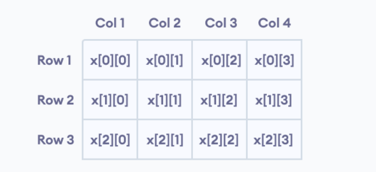

Vectors are same as dynamic arrays with the ability to resize itself automatically when an element is inserted or deleted, with their storage being handled automatically by the container. Vector elements are placed in contiguous storage so that they can be accessed and traversed using iterators. In vectors, data is inserted at the end. Inserting at the end takes differential time, as sometimes there may be a need of extending the array. Removing the last element takes only constant time because no resizing happens. Inserting and erasing at the beginning or in the middle is linear in time.
Vectors C++ are preferable when managing ever-changing data elements. It is handy if you don’t know how big the data is beforehand since you don’t need to set the maximum size of the container. Since it’s possible to resize C++ vectors, it offers better flexibility to handle dynamic elements. C++ vectors offer excellent efficiency. It is a template class, which means no more typing in the same code to handle different data. If you use vectors, you can copy and assign other vectors with ease. There are different ways to do that: using the iterative method, assignment operator =, an in-built function, or passing vector as a constructor. In C++ vectors, automatic reallocation happens whenever the total amount of memory is used. This reallocation relates to how size and capacity function works.
Vectors in C++ work by declaring which program uses them. The common syntax look like this:
vector /type/ variable (elements)
For example:
vector /int/ rooms(9)
Let's break it down:
An iterator allows you to access the data elements stored within the C++ vector.It is an object that functions as a pointer.
There are five types
of iterators in C++: input, output, forward, bidirectional, and random access.
C++ vectors support random access iterators.
Here are a few function you may use with iterators for C++ vectors:
Output:
Output:
Output:
Output:
The matrix is a two-dimensional array - with rows and columns.
A matrix is a rectangular array of numbers that is arranged in the form of rows and columns.
In C++, we can create an array of an array, known as a multidimensional array.
For example:
Here is the general form of a two Two-dimensional array declaration −type arrayName [ x ][ y ];
For example:
Here, x is a two-dimensional array. It can hold a maximum of 12 elements.
We can think of this array as a table with 3 rows and each row has 4 columns as shown below.

Three-dimensional arrays also work in a similar way.
Multidimensional array declaration:
type name[size1][size2]...[sizeN]
For example:
This array x can hold a maximum of:
Like a normal array, we can initialize a multidimensional array in more than one way.
Output:
In the above example, we have initialized a two-dimensional int array named test that has 3 "rows" and 2 "columns". Here, we have used the nested for loop to display the array elements. Finally, we print the array elements in each iteration.
Output: